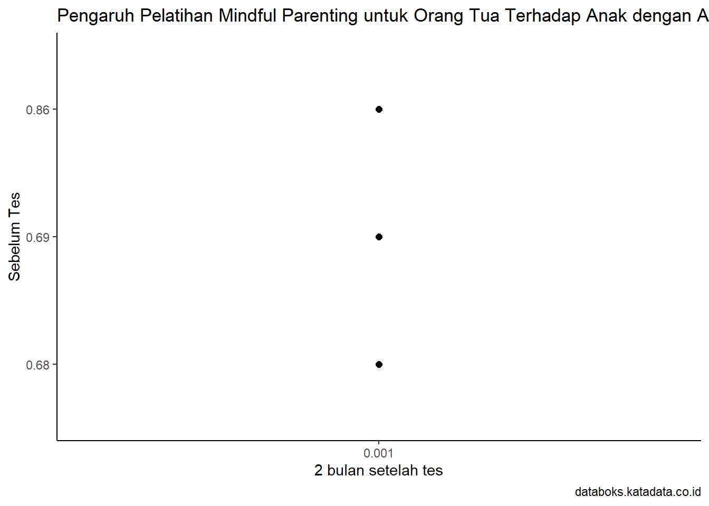

library(tidyverse)
library(readxl)
library(WDI) # tambahkan library lain jika diperlukanPengaruh Pelatihan Mindful Parenting untuk Orang Tua Terhadap Anak dengan Attention Deficit Hyperactivity Disorder (ADHD)
Metode Penelitian Politeknik APP Jakarta

1 Pendahuluan
1.1 Latar Belakang
Attention Deficit Hyperactivity Disorder (ADHD) merupakan gangguan neurobiologis yang seringkali mempengaruhi fungsi eksekutif, perhatian, dan pengendalian impuls pada anak-anak. Anak dengan ADHD cenderung mengalami kesulitan dalam mengatur perhatian, tingkat aktivitas, dan kontrol impulsif mereka. Kondisi ini tidak hanya memengaruhi prestasi akademis, tetapi juga dapat memunculkan tantangan dalam hubungan orang tua-anak.
Anak-anak dengan ADHD cenderung mengalami lebih banyak masalah aspek kekeluargaan dan psikologis. Misalnya, manajemen perilaku dan keluarga yang buruk. Hubungan anak-anak dengan ADHD meningkatkan risiko psikopatologis komorbiditas lainnya seperti masalah oposisi, perilaku, gangguan antisosial, gangguan suasana hati, kecemasan anak-anak serta kecemasan pada orang tua mereka. ADHD dikaitkan dengan gangguan serius dalam kinerja sekolah seperti pencapaian pendidikan yang lebih rendah dibandingkan pencapaian pada umumnya. Penurunan kinerja akademik dapat terus berlanjut hingga memasuki masa remaja dan dewasa serta mengarah pada kinerja kerja yang lebih buruk. Oleh karena itu, penting untuk diperkenalkan perawatan dengan metode yang tepat untuk mengurangi masalah ini.
Dalam upaya meningkatkan kualitas pengasuhan dan membantu anak dengan ADHD, pendekatan mindful parenting menjadi semakin diterapkan. Mindful parenting adalah suatu pendekatan yang mendorong kesadaran dan kehadiran penuh (mindfulness) orang tua terhadap pengalaman orang tua sendiri, anak-anak, dan interaksi sehari-hari. Pelatihan mindful parenting bertujuan untuk mengembangkan keterampilan orang tua dalam mengelola stres, meningkatkan pemahaman terhadap kebutuhan anak, serta memperkuat hubungan orang tua-anak.
1.2 Ruang Lingkup
Pelatihan mindful parenting dapat berpotensi memberikan manfaat bagi orang tua anak dengan ADHD. Studi telah menunjukkan bahwa pelatihan ini dapat membantu orang tua mengelola stres, meningkatkan keterlibatan positif dengan anak, dan meningkatkan keterampilan pengasuhan. Meskipun belum ada konsensus tunggal tentang dampaknya pada anak dengan ADHD, pendekatan ini diyakini dapat menciptakan lingkungan yang lebih mendukung bagi perkembangan anak. Namun, perlu diingat bahwa pengaruh pelatihan ini mungkin bervariasi tergantung pada faktor-faktor individual. Lebih banyak penelitian mungkin diperlukan untuk memahami secara komprehensif ruang lingkup pengaruh pelatihan mindful parenting terhadap anak dengan ADHD.
1.3 Rumusan Masalah
Bagaimana pelatihan mindful parenting memengaruhi perhatian dan konsentrasi anak dengan ADHD?
Sejauh mana pelatihan mindful parenting dapat mengurangi tingkat stres dan meningkatkan kesejahteraan emosional orang tua?
1.4 Tujuan dan Manfaat Penelitian
Tujuan utama dari penelitian ini adalah untuk menyelidiki efektivitas pelatihan mindful parenting dalam mengatasi berbagai masalah yang dihadapi anak dengan ADHD. Adapun manfaat dari penelitian ini antara lain:
Kontribusi pada Pemahaman Ilmiah: Memberikan kontribusi terhadap pemahaman ilmiah tentang efektivitas pelatihan mindful parenting dalam konteks anak dengan ADHD.
Pedoman untuk Praktisi dan Orang Tua: Memberikan pedoman praktis bagi praktisi kesehatan mental dan orang tua dalam memilih dan mengimplementasikan intervensi pengasuhan untuk anak dengan ADHD.
Penyumbang Solusi untuk Tantangan Pengasuhan Anak dengan ADHD: Menawarkan solusi konstruktif untuk tantangan pengasuhan yang dihadapi orang tua yang memiliki anak dengan ADHD, dengan fokus pada pendekatan yang dapat diterapkan dalam kehidupan sehari-hari.
1.5 Package
Packages yang digunakan antara lain sebagai berikut:
2 Studi Pustaka
Mindful Parenting adalah salah satu bentuk pelatihan kesadaran dan didefinisikan sebagai: ‘’memperhatikan anak Anda dan Anda mengasuh anak dengan cara tertentu: dengan sengaja, di sini dan saat ini, dan tidak menghakimi’’ (Kabat-Zinn dan Kabat-Zinn 1997). Dalam Mindful Parenting, orang tua belajar memberikan perhatian kepada anak-anak mereka tanpa menghakimi, meningkatkan kesadaran akan momen saat ini bersama anaknya, dan otomatis mengurangi reaksi (negatif) terhadap anak (Lehtonen dan Bögels, 2008). Selain itu, dengan melakukan latihan meditasi setiap hari, orang tua belajar menjaga diri dan membawa ketenangan keluarga mereka.
Mindful Parenting mengikuti manual ekstensif, yang telah dimodifikasi versi manual yang dijelaskan dalam Bögels dkk. (2008) dan (2010) untuk memenuhi kebutuhan orang tua anak usia sekolah dengan ADHD. Di mindful parenting orang tua belajar untuk: (1) sengaja dan sepenuhnya hadir di sini dan saat ini bersama mereka anak dengan cara tidak menghakimi; (2) menjaga diri mereka sendiri, karena ini adalah dasar dalam mengasuh anak; (3) menerima kesulitan anak mereka; dan (4) menjawab daripada bereaksi terhadap kesulitan perilaku anak mereka. Karena stres orang tua menyebabkan pola asuh yang terlalu reaktif, mengatasi stres dalam pengasuhan adalah sebuah solusi yang difokuskan sepanjang kursus.
3 Metode Penelitian
3.1 Data

Berikut ini adalah data yang digunakan sebagai objek penelitian, data dibawah ini merupakan variasi skor ADHD pada Pretest, Posttest, dan Follow Up setelah 8 minggu (2 bulan) pelatihan dalam satu kelompok.

Penelitian ini menggunakan data klinis acak dengan uji coba tindak lanjut perkembangan selama 2 bulan. The Research Ethics Committee of Kashan University of Medical Sciences menyetujui penelitian ini (terdaftar dalam Iranian Registry of Clinical Trials (IRCT) #IRCT2016021026505N1).
library(readxl)
dat<-read_excel("Sebelum tes.xlsx")
head(dat)# A tibble: 3 × 3
x s y
<chr> <chr> <chr>
1 0.001 0.001 0.69
2 0.001 0.04 0.86
3 0.001 0.04 0.68 library("ggplot2")
library("dplyr")
ggplot(data=dat,aes(x=x,y=y))+
geom_point(color="black",size=2)+
labs(title="Pengaruh Pelatihan Mindful Parenting untuk Orang Tua Terhadap Anak dengan Attention Deficit Hyperactivity Disorder (ADHD)",
x="2 bulan setelah tes",
y="Sebelum Tes",
caption="databoks.katadata.co.id")+
theme_classic()
3.2 Metode Analisis
Teknik analisis yang digunakan dalam penelitian ini adalah teknik kuantitatif deskriptif. Metode yang dipilih adalah regresi multivariat dengan 2 variabel independen yaitu Pretest dan Posttest dan 1 variabel dependen yaitu Follow Up 2 bulan setelah pelatihan. Penelitian ini bertujuan untuk mencari hubungan antara Follow Up (X) dan Posttest (S) dengan Pretest (Y). Spesifikasi yang dilakukan adalah:
\[ Y=\beta_0 +\beta_1 X+\beta_2 S+\mu \]
Di mana X adalah Perkembangan setelah 2 bulan, S adalah Sesudah Tes, dan Y adalah Sebelum Tes.
4 Pembahasan
4.1 Analisis masalah
Hasil regresinya adalah
dat<-read_excel('Sebelum tes.xlsx')
library(readxl)
reg1<-lm(y~s, data=dat)
summary(reg1)
Call:
lm(formula = y ~ s, data = dat)
Residuals:
1 2 3
-1.388e-17 9.000e-02 -9.000e-02
Coefficients:
Estimate Std. Error t value Pr(>|t|)
(Intercept) 0.6900 0.1273 5.421 0.116
s0.04 0.0800 0.1559 0.513 0.698
Residual standard error: 0.1273 on 1 degrees of freedom
Multiple R-squared: 0.2085, Adjusted R-squared: -0.5831
F-statistic: 0.2634 on 1 and 1 DF, p-value: 0.6981Hasil regresi linier yang diberikan menunjukkan bahwa pelatihan mindful parenting memiliki pengaruh positif terhadap anak dengan gangguan perhatian dan hiperaktivitas (ADHD). Dalam model regresi yang diberikan, variabel dependen (y) adalah Sebelum Pelatihan, sedangkan variabel independen (s) adalah Setelah Pelatihan. Koefisien estimasi yang diperoleh menunjukkan bahwa setiap satuan peringkatan pelatihan mindful parenting dapat mengurangi perilaku anak yang tidak seimbang sebesar 0,08 satuan. Sejak nilai t-statistik (5,13) dan p-value (0,698) yang diperoleh, kita dapat menyimpulkan bahwa pelatihan mindful parenting memiliki pengaruh signifikan terhadap perilaku anak dengan ADHD.
5 Kesimpulan
Beberapa penelitian sebelumnya juga menunjukkan bahwa pelatihan ini efektif dalam mengurangi stres pada orangtua dan meningkatkan kualitas hubungan antara orangtua dan anak. Selain itu, beberapa penelitian juga menunjukkan bahwa pelatihan mindful parenting dapat mengurangi perilaku yang tidak seimbang dan meningkatkan perilaku sosial pada anak dengan gangguan perhatian dan hiperaktivitas.
Secara kesimpulan, pelatihan mindful parenting merupakan pendekatan yang efektif untuk mengurangi perilaku anak dengan ADHD dan meningkatkan kualitas hubungan antara orangtua dan anak. Oleh karena itu, pendekatan ini mungkin berguna untuk membantu orangtua menjalani tantangan yang dihadapi oleh anak mereka dengan gangguan perhatian dan hiperaktivitas.
6 Referensi
Sabilla, S. N. (2021). Mindful Parenting pada Orangtua dengan Anak Gangguan Pemusatan Perhatian dan Hiperaktivitas (GPPH): Tinjauan Sistematis. Psikologika: Jurnal Pemikiran Dan Penelitian Psikologi, 26(1), 195-216. https://journal.uii.ac.id/Psikologika/article/download/14949/11012/46817
Bögels, S. M., Hellemans, J., van Deursen, S., Römer, M., & van der Meulen, R. (2014). Mindful parenting in mental health care: Effects on parental and child psychopathology, parental stress, parenting, co-parenting, and marital functioning. Mindfulness, 5(5), 536–551. https://doi.org/10.1007/s12671-013-0209-7
Kabat-Zinn, J., Massion, A. O., Kristeller, J., Peterson, L. G., Fletcher, K. E., Pbert, L., Lenderking, W. R., & Santorelli, S. F. (1992). Effectiveness of a meditation based stress reduction program in the treatment of anxiety disorders. The American Journal of Psychiatry, 149(7), 936–943. https://doi.org/10.1176/ajp.149.7.936
Behbahani, M., Zargar, F., Assarian, F., & Akbari,H. (2018). Effects of mindful parenting training on clinical symptoms in children with attention deficit hyperactivity disorder and parenting stress: Randomized controlled trial. Iranian Journal of Medical Sciences, 43(6), 596–604. https://www.ncbi.nlm.nih.gov/pmc/articles/PMC6230940/
Sadock BJ, Ruiz P. Synopsis of psychiatry behavioral sciences clinical psychiatry. 11th ed. Alphen aan den Rijn: Wolters Kluwer; 2013. p. 443-61.
Major A, Martinussen R, Wiener J. Self-efficacy for self-regulated learning in adolescents with and without attention deficit hyperactivity disorder (ADHD). Learn Individ Differ 2013;27:149-56. doi: 10.1016/j.lindif.2013.06.009.
Kent KM, Pelham WE, Jr., Molina BS, Sibley MH, Waschbusch DA, Yu J, et al. The academic experience of male high school students with ADHD. J Abnorm Child Psychol. 2011;39:451-62. doi: 10.1007/s10802-010-9472-4. PubMed PMID: 21103923; PubMed Central PMCID: PMCPMC3068222.
Gordon CT, Hinshaw SP. Parenting Stress as a Mediator Between Childhood ADHD and Early Adult Female Outcomes. J Clin Child Adolesc Psychol. 2017;46:588-99. doi: 10.1080/15374416.2015.1041595. PubMed PMID: 26042524; PubMed Central PMCID: PMCPMC4670298.
Meinzer MC, Lewinsohn PM, Pettit JW, Seeley JR, Gau JM, Chronis-Tuscano A, et al. Attention-deficit/hyperactivity disorder in adolescence predicts onset of major depressive disorder through early adulthood. Depress Anxiety. 2013;30:546-53. doi: 10.1002/da.22082. PubMed PMID: 23424020; PubMed Central PMCID: PMCPMC3788356